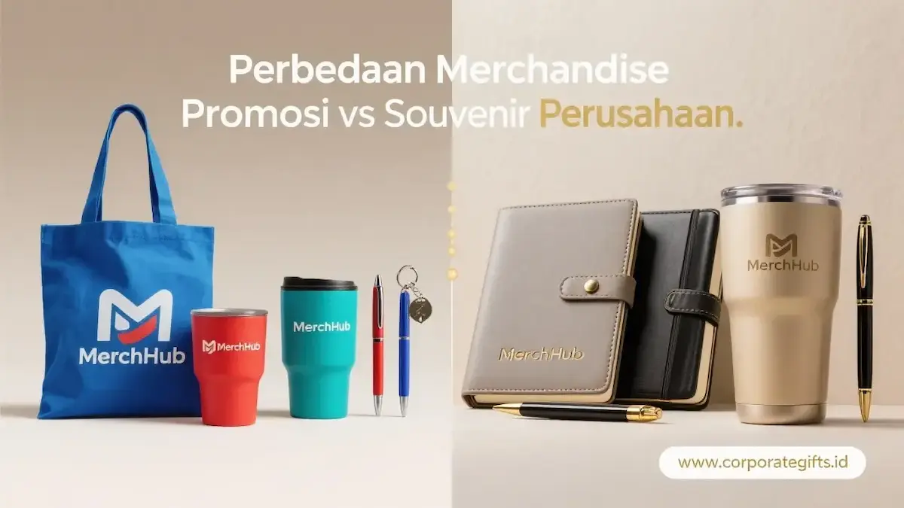

Corporate Gifts ID - Perbedaan utama antara merchandise promosi dan souvenir perusahaan terletak pada tujuan strategis serta profil target audiensnya. Merchandise promosi digunakan untuk memperluas brand awareness secara massal kepada publik luas dengan alokasi biaya per unit yang efisien. Sebaliknya, souvenir perusahaan adalah hadiah eksklusif dan terkurasi yang dirancang khusus untuk mengapresiasi serta memperkuat hubungan jangka panjang dengan klien VIP, mitra bisnis, maupun jajaran karyawan berprestasi.
Poin Kunci Perbedaan Merchandise Promosi & Souvenir:
- Fokus Merchandise Promosi: Mengutamakan jangkauan luas (reach), utilitas harian, dan paparan merek berulang.
- Fokus Souvenir Perusahaan: Mengutamakan eksklusivitas, material berkualitas premium, dan kesan apresiasi personal.
- Peran Saling Melengkapi: Keduanya bekerja sinergis dalam saluran pemasaran (akuisisi pasar dan retensi kemitraan).
- Optimalisasi ROI Anggaran: Ketepatan memilih kategori mencegah inefisiensi pengeluaran dana corporate gifting.
- Koleksi Terpadu: Pilihan katalog lengkap dapat disesuaikan langsung di layanan katalog produk CorporateGifts.ID.
Memahami batasan fungsional kedua instrumen branding ini sangat penting bagi tim procurement maupun divisi pemasaran. Kesalahan menetapkan kategori barang sering kali menyebabkan pemborosan anggaran tanpa menghasilkan dampak kemitraan yang diharapkan.
Daftar Isi Artikel
- Apa Itu Merchandise Promosi dan Kapan Digunakan?
- Apa Itu Souvenir Perusahaan dan Kapan Digunakan?
- Tabel Perbedaan Utama Merchandise Promosi vs Souvenir Perusahaan
- Cara Menggabungkan Merchandise dan Souvenir dalam Strategi Branding
- Tips Memilih Produk yang Tepat untuk Perusahaan
- FAQ: Pertanyaan Seputar Corporate Gifting
- Kesimpulan Praktis
Apa Itu Merchandise Promosi dan Kapan Digunakan?
Merchandise promosi adalah produk berlogo instansi yang diproduksi dan disebarkan secara massal untuk menanamkan ingatan merek (brand recall) di benak masyarakat luas. Produk kategori ini dapat Anda temukan pada momen merchandise tahun baru atau kampanye peluncuran lini bisnis.
Perusahaan umumnya membagikan cenderamata promosi secara cuma-cuma dalam agenda berskala masif, seperti seminar umum, pameran industri (exhibition), aktivasi brand, atau pendaftaran nasabah/pengguna baru.
Tujuan utamanya adalah menciptakan top-of-mind awareness. Audiens yang semula belum mengenal identitas Anda akan terpapar logo korporat secara berulang dalam aktivitas sehari-hari.
Ciri Khas Merchandise Promosi:
- Produksi Berskala Massal: Diproduksi dalam kuantitas ratusan hingga ribuan unit dengan biaya satuan yang terjangkau.
- Visibilitas Logo Jelas: Menampilkan logo atau slogan perusahaan yang mudah dikenali dari kejauhan.
- Distribusi Terbuka: Dibagikan pada event komersial atau promosi terbuka tanpa seleksi audiens yang ketat.
- Fokus pada Utilitas Harian: Memprioritaskan barang yang langsung terpakai seperti tumbler custom, tote bag branding, lanyard kartu identitas, dan payung lipat anti-UV.
Apa Itu Souvenir Perusahaan dan Kapan Digunakan?
Sebaliknya, souvenir perusahaan adalah cenderamata bernilai tinggi dan berkarakter personal yang diberikan untuk memelihara hubungan profesional yang telah terbina.
Cenderamata korporat ini diserahkan pada momen-momen istimewa yang bersifat formal, seperti perayaan hari jadi (anniversary) mitra bisnis, seremoni penandatanganan kontrak kerja sama strategis, agenda souvenir kantor akhir tahun, hingga apresiasi milestone pengabdian karyawan.
Berbeda dari barang promosi biasa, souvenir perusahaan mengemban nilai emosional yang tinggi karena mengekspresikan rasa terima kasih, kehormatan, dan standar kredibilitas pihak pemberi hadiah.

Koleksi ragam produk merchandise promosi dan cenderamata korporat premium berlogo resmi untuk berbagai kebutuhan agenda bisnis.
Ciri Khas Souvenir Perusahaan:
- Kuantitas Terkurasi: Diproduksi dalam jumlah terbatas khusus bagi pihak penerima yang telah ditentukan sebelumnya.
- Personalisasi Eksklusif: Sering memuat grafir nama penerima secara spesifik, jabatan, atau nomor seri unik.
- Material Berkualitas Unggul: Menggunakan bahan premium seperti kulit sintetis tebal, kaca borosilikat, kristal, maupun logam padat.
- Estetika Pengemasan Mewah: Dilengkapi kemasan hardbox berlapis satin atau busa cetak presisi untuk sensasi membuka kado yang tak terlupakan.
- Contoh Produk Unggulan: Paket corporate gift box premium, plakat kristal penghargaan, pulpen eksekutif bertinta emas, dan hampers akhir tahun eksklusif.
Tabel Perbedaan Utama Merchandise Promosi vs Souvenir Perusahaan
Untuk memudahkan proses penganggaran dan penyusunan proposal pengadaan B2B, tabel berikut menguraikan perbandingan mendasar antara kedua tipe hadiah bisnis ini:
| Aspek Penentu | Merchandise Promosi | Souvenir Perusahaan |
|---|---|---|
| Tujuan Utama | Membangun brand awareness & eksposur massal | Merawat retensi, apresiasi & loyalitas kemitraan |
| Target Audiens | Publik umum, pengunjung pameran, prospek baru | Klien VIP, jajaran direksi, mitra strategis, karyawan |
| Skala Distribusi | Massal (Kuantitas pesanan tinggi) | Eksklusif (Kuantitas terkurasi & selektif) |
| Kualitas & Biaya | Harga per unit efisien, fokus fungsi utilitas | Harga premium, material mewah berkualitas tinggi |
| Momen Penyerahan | Pameran bisnis, seminar terbuka, promosi rutin | Penutupan kontrak, perayaan milestone, akhir tahun |
Cara Menggabungkan Merchandise dan Souvenir dalam Strategi Branding
Efektivitas kampanye corporate branding akan mencapai titik tertinggi saat kedua kategori ini dijalankan beriringan secara proporsional sesuai siklus kalender kegiatan perusahaan.
Gunakan merchandise promosi sebagai pintu masuk akuisisi. Bagikan secara luas pada pameran dagang atau konferensi untuk menarik minat prospek baru masuk ke dalam saluran pemasaran (marketing funnel) Anda.
Di saat yang sama, alokasikan anggaran terpisah untuk souvenir custom VIP sebagai instrumen retensi. Bingkisan bernilai tinggi ini bertugas merawat pemangku kepentingan kunci yang menyumbangkan kontribusi substansial terhadap keberlanjutan bisnis Anda.
Tips Memilih Produk yang Tepat untuk Perusahaan
Langkah fundamental sebelum memulai pemesanan adalah merumuskan indikator keberhasilan (KPI) yang terukur:
- Tentukan Target Visibilitas: Jika tujuannya adalah paparan visual logo yang meluas di ruang publik, payung lipat, tote bag, atau tumbler merupakan pilihan yang tepat.
- Tentukan Kedalaman Hubungan Kemitraan: Jika sasarannya adalah memperkuat kedekatan emosional dengan pimpinan instansi rekanan, paket buku agenda kulit dengan pen grafir nama penerima adalah prioritas mutlak.
- Jaga Konsistensi Identitas Visual: Terapkan standarisasi logo, panduan warna korporat (corporate color palette), dan kualitas kemasan pada kedua kategori agar citra perusahaan Anda selalu tampil profesional.
FAQ: Pertanyaan Seputar Corporate Gifting
Kesimpulan Praktis
Merchandise promosi dan souvenir perusahaan merupakan dua instrumen berbeda di dalam payung strategi pemasaran yang saling menguatkan. Memahami karakteristik masing-masing akan menghindarkan perusahaan Anda dari ketidakefisienan alokasi anggaran.
Merchandise bertugas membuka jalan mengenalkan nama brand Anda ke pasar yang lebih luas, sementara souvenir eksklusif bertugas mempertahankan mereka yang telah menaruh kepercayaan pada bisnis Anda.
Ingin mengeksplorasi pilihan produk terkini untuk kebutuhan promosi massal maupun souvenir VIP rekanan Anda? Konsultasikan rencana kebutuhan Anda bersama tim konsultan kami di CorporateGifts.ID sekarang juga.

Ditulis oleh: Arinda Zakia
Senior Corporate Gifting SpecialistKonsultan senior pengadaan cinderamata korporat dan merchandise B2B di CorporateGifts.ID. Berpengalaman lebih dari 8 tahun dalam kurasi hadiah fungsional bernilai estetika tinggi bagi korporasi dan institusi di Indonesia.
Lihat Profil Lengkap & Panduan Lainnya